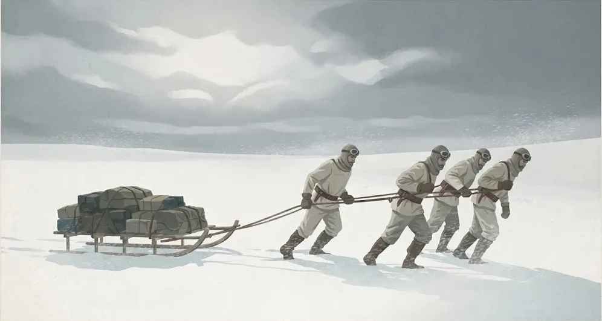
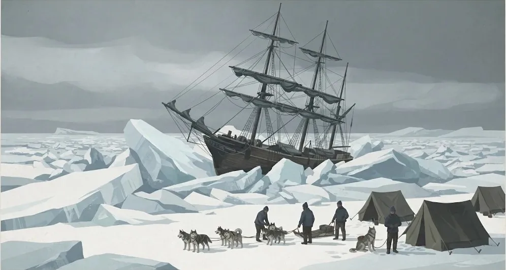
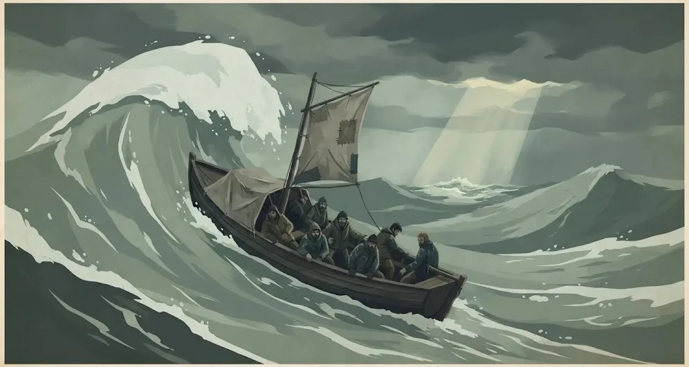
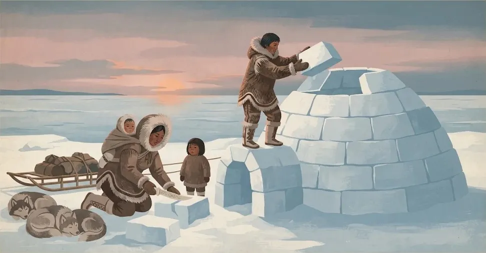
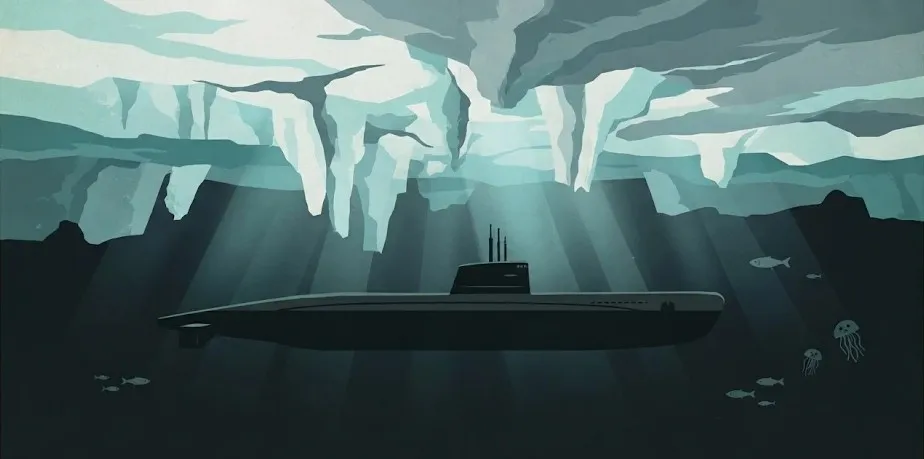

Hace poco más de un siglo, los dos extremos del planeta eran los últimos lugares de la Tierra que nadie había pisado. Llegar a ellos costó barcos aplastados por el hielo, hombres muertos de frío y de hambre, y alguna de las mayores hazañas de supervivencia que se recuerdan.
Este segundo número de Bitácora del Almirante viaja a los polos: la carrera entre Amundsen y Scott, los veintiocho hombres de Shackleton, el hielo que guarda ochocientos mil años de clima, la razón por la que hay hielo allí, el pueblo que aprendió a vivir en el Ártico y la bióloga barcelonesa que llevó a España a la Antártida. Además, el último diario de Scott, los mitos que conviene desmontar y dónde seguir leyendo.
La misma historia, contada para los más jóvenes, está en Bitácora del Grumete, la revista hermana con Ammo.
En el verano antártico de 1911, dos expediciones salieron hacia el mismo punto del mapa, el último lugar de la Tierra que nadie había pisado. Un noruego llegó con sus perros, plantó una tienda y volvió a casa sin un rasguño. Un británico llegó treinta y cuatro días después, encontró la tienda del noruego y murió con sus cuatro compañeros en el camino de vuelta. Esta es la historia de por qué.
El último rincón del mapa
A principios del siglo XX quedaban pocos lugares del planeta sin explorar, y los más codiciados eran los dos polos. Eran puntos sin nada que ganar: ni oro, ni especias, ni tierras que cultivar. Pero llegar el primero daba una gloria inmensa a los exploradores y a sus países, en una época de imperios y de orgullos nacionales.
El Polo Norte parecía conquistado. En 1909 dos estadounidenses, Frederick Cook y Robert Peary, dijeron haberlo alcanzado, cada uno por su lado y cada uno acusando al otro de mentir. Hoy casi ningún historiador cree que ninguno de los dos llegara de verdad, pero en aquel momento la noticia bastó para que el norte perdiera su atractivo. Quedaba el Polo Sur, en el centro de un continente helado del tamaño de Europa y de la India juntas, cubierto por una capa de hielo de unos dos kilómetros de espesor medio.
Los británicos lo consideraban casi suyo. Sus expediciones habían explorado la Antártida durante una década. En 1909, Ernest Shackleton se había quedado a solo 180 kilómetros del polo y había dado media vuelta para no morir de hambre con sus hombres, una decisión que le honró. Ahora le tocaba al capitán de la Marina Real Robert Falcon Scott, que ya había dirigido una expedición antártica entre 1901 y 1904.
El telegrama de Madeira
Roald Amundsen era el explorador polar más experimentado de su tiempo. Había nacido en 1872 en una familia de armadores noruegos, había dejado los estudios de medicina para hacerse marino y, entre 1903 y 1906, había sido el primero en atravesar en barco el paso del Noroeste, la ruta entre el Atlántico y el Pacífico por el norte de Canadá que los británicos buscaban desde hacía tres siglos. En aquel viaje pasó dos inviernos junto a los inuit netsilik y aprendió de ellos lo que ningún manual europeo enseñaba: cómo vestirse, cómo construir un refugio de nieve y cómo viajar con perros (lo contamos en el artículo de sociedad de este número).
Los cinco noruegos en el Polo Sur, el 14 de diciembre de 1911, junto a la tienda Polheim y la bandera de su país.
Su sueño era el Polo Norte. Había conseguido prestado el Fram, el barco polar más famoso del mundo, y preparaba una deriva por el océano Ártico. Cuando llegó la noticia de que Cook y Peary ya habían llegado al norte, Amundsen cambió de planes en secreto. No se lo dijo a nadie, salvo a su hermano y al capitán del barco: ni a sus patrocinadores, ni al gobierno noruego, ni a la mayoría de su propia tripulación.
El Fram zarpó de Noruega en agosto de 1910, oficialmente rumbo al Ártico. En septiembre, en la isla de Madeira, Amundsen reunió a la tripulación en cubierta y les anunció que iban al sur. Todos aceptaron seguirle. Antes de partir, envió un telegrama a Scott, que ya navegaba hacia la Antártida a bordo del Terra Nova. Decía, según la versión más repetida: «Permítame informarle de que el Fram se dirige a la Antártida. Amundsen». Era una declaración de carrera.
Dos bases, dos maneras de pensar
Las dos expediciones llegaron a la Antártida a principios de 1911, al empezar el verano austral, y establecieron sus bases a unos 650 kilómetros de distancia, a ambos lados de la gran barrera de hielo de Ross, una plataforma helada flotante casi del tamaño de Francia.
Scott se instaló en el cabo Evans, en la isla de Ross, en el mismo estrecho de McMurdo que conocía de su anterior expedición. Desde allí la ruta al polo estaba explorada: había que cruzar la barrera, subir el enorme glaciar de Beardmore que había descubierto Shackleton y atravesar la meseta polar. Era un camino conocido, pero largo.
Amundsen eligió un sitio que nadie había usado: la bahía de las Ballenas, en el borde oriental de la barrera, unos cien kilómetros más al sur que la base de Scott. Allí levantó una cabaña de madera que había traído desmontada desde Noruega y la llamó Framheim, «la casa del Fram». Su ruta hacia el polo era desconocida: tendría que encontrar un paso a través de las montañas que nadie había visto.
Pero la gran diferencia no estaba en el mapa, sino en la manera de viajar.
Perros, ponis y motores
Amundsen confiaba en una sola cosa: los perros de Groenlandia, capaces de tirar de un trineo cargado durante días a cuarenta grados bajo cero y de dormir en la nieve. Llevó casi cien. Sus hombres eran esquiadores excelentes, algunos campeones en Noruega. Todos vestían ropa de pieles al estilo inuit, holgada, que dejaba escapar el sudor antes de que se congelara.
Scott lo apostó todo a la variedad. Llevaba trineos de motor, una novedad técnica de la que esperaba mucho; ponis de Manchuria, fuertes pero mal adaptados a la nieve blanda y al frío extremo, porque sudaban y se les congelaba el pelo; unas decenas de perros, que solo llegarían hasta cierto punto; y, para el tramo final, hombres tirando ellos mismos de los trineos, el método que la tradición británica consideraba más noble. Sus hombres vestían prendas de lana y tejidos cortavientos que acumulaban el hielo del sudor.

Los hombres de Scott tiraban ellos mismos de los trineos: más de cien kilos por cabeza, durante meses.
Había además una decisión que horrorizaba a los británicos. Amundsen había calculado al detalle cuántos perros necesitaría en cada tramo, y planeaba sacrificar a la mayoría por el camino para alimentar a los demás y a los propios hombres. La carne fresca, además, los protegía del escorbuto. Para la sensibilidad de la época, aquello era una crueldad; para Amundsen, que había vivido con los inuit, era la única manera razonable de cruzar un desierto de hielo.
La salida en falso
Ambos pasaron el invierno austral, de abril a agosto, a oscuras, preparando el material. Durante esos meses dejaron por delante depósitos de comida y combustible, marcados con banderas, a lo largo del primer tramo de la ruta.
Amundsen, impaciente, salió demasiado pronto, el 8 de septiembre de 1911, antes de que terminara el invierno. Las temperaturas bajaron a más de cincuenta grados bajo cero, los perros sufrieron, los hombres se congelaron los pies y tuvieron que volver a la base en desorden. En el regreso, Amundsen dejó atrás a dos compañeros, y uno de ellos, Hjalmar Johansen, veterano del Ártico, se lo reprochó delante de todos. Amundsen lo apartó del grupo del polo. Fue la peor decisión de su expedición, y le persiguió el resto de su vida.
El 19 de octubre salió de nuevo con cuatro hombres: Olav Bjaaland, Helmer Hanssen, Sverre Hassel y Oscar Wisting. Llevaban cuatro trineos y 52 perros.
Scott salió de cabo Evans el 1 de noviembre. Los trineos de motor, que habían partido unos días antes, se averiaron a los pocos kilómetros. Los ponis avanzaban despacio y había que sacrificarlos uno a uno. Al pie del glaciar de Beardmore, los últimos perros se volvieron a la base y, desde allí, los hombres siguieron tirando de los trineos con arneses.
El matadero
Amundsen encontró un camino a través de las montañas Transantárticas por un glaciar desconocido, muy empinado, al que llamó Axel Heiberg, en honor a uno de sus patrocinadores. Los perros subieron más de tres mil metros en pocos días, tirando de los trineos entre grietas. Al llegar arriba, en la meseta polar, Amundsen ejecutó la parte más dura de su plan: sacrificaron 24 perros, los que ya no hacían falta. Los hombres y los perros que quedaban comieron su carne. Llamaron a aquel lugar la Carnicería.
Después atravesaron una zona de grietas y de hielo roto, con niebla, que llamaron el Salón de Baile del Diablo, y alcanzaron la meseta, una llanura blanca e infinita a casi tres mil metros de altura. A partir de ahí, con buen tiempo, recorrieron unos treinta kilómetros diarios.
14 de diciembre de 1911
A las tres de la tarde del 14 de diciembre de 1911, los navegadores de los trineos anunciaron que habían llegado. Los cinco hombres clavaron juntos la bandera noruega. Pasaron tres días haciendo mediciones a varios kilómetros a la redonda para asegurarse de que ningún error de cálculo les hiciera quedarse cortos. Levantaron una pequeña tienda, a la que llamaron Polheim, «la casa del polo», y dejaron dentro una carta para el rey Haakon VII de Noruega y una nota para Scott, pidiéndole que la hiciera llegar al rey si ellos no volvían.
Volvieron sin contratiempos. El 25 de enero de 1912, noventa y nueve días después de salir, llegaron a Framheim con los cinco hombres en buen estado y once perros. Bjaaland escribió en su diario que el viaje había sido casi como un paseo.
«Dios mío, este es un lugar horrible»
Scott y sus hombres subieron el glaciar de Beardmore tirando de los trineos, en medio de grietas y de nieve blanda. En la meseta, el 4 de enero de 1912, Scott eligió a los cinco que irían hasta el final: él mismo; el médico y naturalista Edward Wilson; el teniente Henry Bowers; el capitán Lawrence Oates, oficial de caballería que cuidaba los ponis; y el suboficial Edgar Evans, el más fuerte del grupo. Los demás regresaron. La decisión de llevar a cinco hombres cuando todo estaba preparado para cuatro, con raciones y equipo calculados para grupos de cuatro, complicó las cosas.
El 16 de enero, a pocos kilómetros del polo, Bowers vio a lo lejos algo negro en la nieve. Era una bandera noruega atada a un trineo, junto a huellas de esquís y de perros. Al día siguiente, 17 de enero de 1912, llegaron al Polo Sur y encontraron la tienda de Amundsen, con la nota dentro. Scott escribió en su diario: «Gran Dios, este es un lugar horrible, y bastante terrible para que hayamos trabajado hasta aquí sin la recompensa de la prioridad».
Se hicieron una fotografía. En ella se ve a cinco hombres agotados, sucios, con las caras quemadas por el frío, mirando a la cámara sin sonreír.
La vuelta
Les quedaban unos 1.400 kilómetros hasta la base, y el tiempo empezó a empeorar. Edgar Evans, que se había hecho un corte en la mano que no cicatrizaba, empezó a debilitarse; probablemente había sufrido una caída con golpe en la cabeza en el glaciar. Murió el 17 de febrero al pie del Beardmore.
En la barrera, el frío fue mucho mayor de lo esperado: más de cuarenta grados bajo cero en marzo, cuando lo normal habría sido bastante menos. La nieve, tan fría, se volvía como arena y hacía casi imposible deslizar los trineos. En los depósitos encontraban menos combustible del previsto: las latas, mal cerradas, perdían queroseno con los cambios de temperatura. Pasaban hambre y frío, y el escorbuto empezaba a aparecer.
Oates tenía los pies congelados y gangrenados y sabía que estaba retrasando a los demás. El 17 de marzo, según escribió Scott, se levantó durante una ventisca y dijo: «Voy a salir fuera y quizá tarde un rato». No volvió. Su cuerpo nunca se encontró.
Scott, Wilson y Bowers siguieron unos días más. El 19 de marzo acamparon a solo dieciocho kilómetros del gran depósito de comida que habían dejado en la barrera, el One Ton Depot. Una ventisca les impidió salir de la tienda durante días. Scott hizo su última anotación en el diario el 29 de marzo (la reproducimos en «El documento» de este número). Murieron los tres en la tienda, probablemente ese mismo día o poco después.
El hallazgo
Los compañeros que esperaban en cabo Evans no supieron nada durante todo el invierno. El 12 de noviembre de 1912, una partida de búsqueda encontró la tienda medio enterrada en la nieve. Dentro estaban los tres cuerpos, los diarios, las cartas de despedida y 16 kilos de rocas con fósiles que Wilson había recogido en el glaciar de Beardmore y que habían arrastrado hasta el final. Aquellos fósiles de plantas, de un tipo llamado Glossopteris, demostraron más tarde que la Antártida había tenido bosques y que había estado unida a otros continentes del sur.
Los buscadores derrumbaron la tienda sobre los cuerpos, levantaron encima un gran túmulo de nieve y lo coronaron con una cruz hecha con esquís. Allí siguen, bajo el hielo de la barrera, que se mueve lentamente hacia el mar.
Gloria y culpa
La noticia de la muerte de Scott llegó a Londres en febrero de 1913 y conmocionó al Reino Unido. Su diario se publicó y lo convirtió en un héroe nacional, el ejemplo de cómo un caballero británico debía morir: con valor, sin quejarse, pensando en los demás. Durante décadas, en las escuelas británicas, Scott fue el héroe de la Antártida y Amundsen, en el mejor de los casos, un competidor poco deportivo que había usado perros y había mentido sobre su destino.
Con el tiempo, los historiadores han ido viendo las cosas de otra manera. Amundsen no tuvo suerte: tuvo método. Escogió los perros y la ropa de quienes vivían en el hielo, calculó cada kilo, eligió una base más cercana y se dio un margen enorme de comida y combustible. Scott, en cambio, cometió errores de planificación: confió en los motores y en los ponis, decidió a última hora llevar a un quinto hombre y dejó poco margen en los depósitos. Pero también tuvo muy mala suerte: aquel marzo fue uno de los más fríos de los que hay registro en la barrera de Ross, según estudios meteorológicos posteriores.
Amundsen siguió explorando. En 1926 sobrevoló el Polo Norte a bordo del dirigible Norge, con el italiano Umberto Nobile, y se convirtió así, probablemente, en el primero en ver con seguridad los dos polos. En 1928 desapareció en el mar de Barents, en un hidroavión que buscaba a Nobile, cuyo nuevo dirigible se había estrellado en el Ártico. Su cuerpo nunca se encontró.
Hoy, en el Polo Sur, se levanta una base científica estadounidense. Se llama Amundsen-Scott.
Fuentes principales: Roald Amundsen, «El Polo Sur» (1912); los diarios de Robert Falcon Scott, publicados en «Scott's Last Expedition» (1913); Roland Huntford, «Scott and Amundsen» (1979); Susan Solomon, «The Coldest March» (2001).
Ernest Shackleton y la expedición del Endurance (1914-1917)
Shackleton quería cruzar la Antártida de punta a punta. No llegó a pisarla. Su barco quedó atrapado en el hielo, fue aplastado y se hundió, y veintiocho hombres quedaron a la deriva en un témpano a miles de kilómetros de cualquier lugar habitado. Dos años después, todos estaban vivos. Es una de las grandes historias de supervivencia de todos los tiempos.
El último gran viaje
Con el Polo Sur conquistado por Amundsen y la muerte de Scott todavía reciente, a Ernest Shackleton le quedaba un único desafío a la altura de su ambición: atravesar la Antártida entera a pie, unos 2.900 kilómetros, desde el mar de Weddell, frente a Sudamérica, hasta el mar de Ross, frente a Nueva Zelanda, pasando por el polo. La llamó Expedición Imperial Transantártica.
El plan exigía dos barcos. El Endurance llevaría al grupo principal al mar de Weddell. El Aurora dejaría al otro lado del continente, en el mar de Ross, a un segundo equipo que debía colocar depósitos de comida a lo largo de la última mitad del camino.
Shackleton, irlandés de nacimiento, tenía cuarenta años, una gran simpatía personal y fama de jefe que cuidaba de sus hombres. Era también un pésimo administrador de su propio dinero, y pasó meses pidiendo fondos a millonarios. Se dice que buscó tripulantes con un anuncio en la prensa: «Se buscan hombres para viaje peligroso. Sueldo bajo, frío intenso, largos meses de completa oscuridad, peligro constante, regreso a salvo dudoso. Honor y reconocimiento en caso de éxito». Es una frase magnífica, pero nadie ha encontrado nunca ese anuncio en ningún periódico (lo contamos en «Mito o realidad»).
Zarpar con la guerra
El Endurance salió de Plymouth el 8 de agosto de 1914. Cuatro días antes, el Reino Unido había declarado la guerra a Alemania. Shackleton ofreció su barco y sus hombres al Almirantazgo, y el primer lord, Winston Churchill, le contestó con un telegrama de una sola palabra: «Adelante». Muchos de los que se quedaron en tierra morirían en las trincheras mientras ellos estaban en el hielo.
Tras una escala en Buenos Aires, el barco llegó en noviembre a la isla de Georgia del Sur, en el Atlántico Sur, donde había una estación ballenera noruega, Grytviken. Los balleneros advirtieron a Shackleton de que aquel año el hielo del mar de Weddell estaba más al norte de lo habitual. Esperó un mes y el 5 de diciembre de 1914 zarpó hacia el sur. A bordo iban veintisiete hombres, sesenta y nueve perros y una gata llamada Mrs. Chippy. Poco después apareció un polizón de diecinueve años, Perce Blackborow, al que Shackleton amenazó con ser el primero en ser comido si se acababa la comida. Acabó siendo uno de los más queridos de la tripulación.
Atrapados
El mar de Weddell es una gran bahía donde las corrientes y los vientos acumulan el hielo flotante. El Endurance avanzó durante semanas entre témpanos, abriéndose paso con la proa reforzada. El 19 de enero de 1915, a solo un día de navegación de la costa donde pensaban desembarcar, el hielo se cerró a su alrededor. El barco quedó encajado, como una almendra en el turrón.
Esperaron a que el hielo se abriera. No se abrió. Llegó el invierno austral y el Endurance se convirtió en una casa flotante atrapada en un témpano gigantesco que derivaba lentamente con las corrientes. Los hombres vivieron así nueve meses: cuidaban de los perros, jugaban al fútbol sobre el hielo, hacían obras de teatro y pasaban las noches de invierno, que duraban semanas, entre libros, canciones y partidas de naipes. El fotógrafo australiano Frank Hurley retrató cada momento, y gracias a él hoy podemos verlo.

El Endurance, atrapado en el hielo del mar de Weddell. Los perros vivían en «perreras» de hielo junto al barco.
Con la primavera, la presión del hielo aumentó. Los témpanos empujaban el casco con un ruido de truenos y crujidos. El 27 de octubre de 1915, con el barco torcido, el agua entrando y las cuadernas partidas, Shackleton ordenó abandonarlo. Descargaron sobre el hielo los botes salvavidas, la comida, las tiendas y lo imprescindible. Cada hombre pudo llevar solo un kilo de pertenencias personales. Shackleton dio ejemplo tirando a la nieve unas monedas de oro y una Biblia que le había regalado la reina; solo arrancó de ella algunas páginas.
El 21 de noviembre, el Endurance se hundió. Shackleton anotó en su diario: «Se ha ido».
Vivir en un témpano
Acamparon sobre el hielo. Su única esperanza era que la deriva los llevara hacia el norte, donde el hielo se rompería y podrían alcanzar alguna isla con los botes. Intentaron avanzar arrastrando los botes sobre el hielo, pero era agotador e inútil. Así que esperaron, meses, en el llamado Campamento Paciencia, comiendo focas y pingüinos. Cuando se acabaron las reservas, tuvieron que sacrificar a los perros, y antes habían sacrificado a la gata. El carpintero, Harry McNish, nunca perdonó a Shackleton lo de la gata.
En abril de 1916 el témpano empezó a romperse bajo sus pies. Subieron a los tres botes, el James Caird, el Dudley Docker y el Stancomb Wills, y durante siete días remaron y navegaron entre hielo suelto y olas, empapados y congelados, sin poder dormir. El 15 de abril de 1916 desembarcaron en la isla Elefante, una roca desierta y azotada por el viento en el extremo de las Shetland del Sur. Era la primera vez que pisaban tierra firme en 497 días.
Ochocientas millas en un bote
La isla Elefante estaba lejos de cualquier ruta de barcos. Nadie los buscaría allí. Shackleton decidió ir él mismo a pedir ayuda. El lugar habitado más cercano al que podían llegar con los vientos era Georgia del Sur, a unas ochocientas millas náuticas, casi 1.300 kilómetros, cruzando el océano Austral, el mar más tormentoso del planeta.
El carpintero McNish reforzó el James Caird, un bote de siete metros, y le improvisó una cubierta con lona y tablas de las cajas. El 24 de abril, Shackleton partió con cinco hombres: el capitán Frank Worsley, un neozelandés que era un navegante extraordinario; el irlandés Tom Crean, un gigante que ya había estado con Scott; el propio McNish; y los marineros John Vincent y Timothy McCarthy. En la isla quedaron veintidós hombres al mando de Frank Wild, refugiados bajo los dos botes restantes puestos boca abajo.
El viaje del James Caird es una leyenda de la navegación. Durante dieciséis días soportaron olas gigantescas, vientos huracanados y un frío que cubría el bote de hielo, que había que romper a hachazos para que no se hundiera por el peso. Estaban siempre mojados, y apenas comían. Worsley solo pudo ver el sol cuatro veces en todo el viaje para calcular su posición con el sextante, sujetado por otros dos hombres para no caer al agua. Si se equivocaba unos pocos grados, pasarían de largo junto a la isla y se perderían en el Atlántico. No se equivocó. El 10 de mayo llegaron a la costa sur de Georgia del Sur.

El James Caird, un bote de siete metros, en el océano Austral: dieciséis días hasta Georgia del Sur.
Cruzar la isla
Pero las estaciones balleneras estaban en la costa norte, y el bote estaba demasiado dañado para dar la vuelta a la isla. Shackleton, Worsley y Crean decidieron cruzarla a pie: unos cuarenta kilómetros de montañas y glaciares que nadie había atravesado nunca y que no figuraban en ningún mapa. No tenían equipo de montaña: llevaban una cuerda, un hacha y tornillos de las tablas del bote clavados en las botas para no resbalar.
Caminaron treinta y seis horas casi sin parar. En un momento, atrapados en lo alto de una ladera al anochecer, se sentaron uno detrás de otro sobre la cuerda enrollada y se lanzaron cuesta abajo como en un trineo, a ciegas, porque quedarse allí era morir congelados. Sobrevivieron al descenso. Los tres contaron después, cada uno por su lado, que durante la travesía habían sentido la presencia de un cuarto acompañante. El poeta T. S. Eliot recordó esa historia en uno de sus poemas.
El 20 de mayo de 1916, tres hombres barbudos, sucios y harapientos entraron en la estación ballenera de Stromness. El encargado, que conocía a Shackleton, no le reconoció.
Todos vivos
Los tres que se habían quedado al otro lado de la isla fueron rescatados al día siguiente. Pero en la isla Elefante seguían veintidós hombres, y llegar hasta ellos fue casi tan difícil como todo lo anterior. El hielo frustró tres intentos de rescate en barcos británicos, uruguayos y chilenos. Al cuarto, el remolcador Yelcho de la Armada de Chile, al mando del piloto Luis Pardo, consiguió acercarse a la isla el 30 de agosto de 1916.
Desde la playa, los náufragos vieron un barco. Shackleton, de pie en el bote que se acercaba, gritó preguntando si estaban todos bien. Frank Wild contestó: «Todos a salvo, todos bien». Habían pasado cuatro meses y medio comiendo pingüinos y focas, bajo dos botes volcados. No había muerto ninguno.
La otra mitad de la expedición, la del mar de Ross, tuvo peor suerte. El Aurora había sido arrastrado mar adentro por una tormenta, dejando en tierra a diez hombres casi sin provisiones, que aun así colocaron todos los depósitos que les habían encargado para un grupo que nunca llegaría. Tres de ellos murieron. Shackleton fue en persona a rescatar a los supervivientes a principios de 1917.
El barco del fondo del mar
La expedición fracasó en todo lo que se propuso. Y sin embargo, el rescate de sus hombres convirtió a Shackleton en el símbolo del liderazgo en las peores circunstancias. Murió de un ataque al corazón el 5 de enero de 1922, a los cuarenta y siete años, a bordo de su barco, el Quest, fondeado en Georgia del Sur, cuando preparaba otra expedición. Por deseo de su mujer, fue enterrado en el cementerio de los balleneros de Grytviken.
El Endurance permaneció casi un siglo en el fondo del mar de Weddell. Varias expediciones lo buscaron sin éxito. El 5 de marzo de 2022, justo cien años después del entierro de Shackleton, un equipo con robots submarinos lo encontró a 3.008 metros de profundidad. El agua helada, en la que no viven los gusanos que devoran la madera, lo había conservado casi intacto: en la popa todavía se lee, en letras doradas, su nombre. Está protegido como monumento histórico y nadie puede tocarlo.
Fuentes principales: Ernest Shackleton, «South» (1919); Frank Worsley, «Shackleton's Boat Journey» (1940); Alfred Lansing, «Endurance» (1959); Falklands Maritime Heritage Trust, expedición Endurance22 (2022).
Cómo los cilindros de hielo antártico guardan ochocientos mil años de clima
La Antártida no es solo el lugar más frío del planeta: es también su archivo más antiguo. Cada copo de nieve que cayó allí hace cientos de miles de años sigue en su sitio, aplastado bajo los que vinieron después, y dentro lleva burbujas del aire que respiraban los mamuts. Leer ese archivo ha cambiado lo que sabemos del clima de la Tierra.
Un pastel de capas
En el interior de la Antártida casi nunca llueve ni hace calor suficiente para que la nieve se derrita. La que cae se queda, año tras año. Cada nevada cubre a la anterior, y el peso de las capas de encima la va comprimiendo: primero se convierte en una nieve granulada y dura, la neviza, y a unas decenas de metros de profundidad, en hielo macizo.
El resultado es una especie de pastel de miles de capas, cada una de las cuales corresponde a un tiempo concreto. Cuanto más abajo, más antigua. En algunos lugares, como Groenlandia, donde nieva mucho, las capas anuales se distinguen a simple vista, una clara y otra oscura, como los anillos de un árbol, y se pueden contar una a una. En el interior de la Antártida nieva tan poco, apenas unos centímetros al año, que las capas son finísimas. Esa es precisamente su ventaja: en el mismo espesor de hielo cabe muchísimo más tiempo.
Perforar tres kilómetros
Para leer el archivo hay que sacarlo. Los científicos perforan el hielo con una broca hueca colgada de un cable, que corta un cilindro de unos diez centímetros de diámetro. Lo suben a la superficie en tramos de unos pocos metros, lo cortan, lo etiquetan y lo guardan a temperaturas muy bajas. A esos cilindros se les llama testigos de hielo.
La perforación más famosa es la de EPICA, un proyecto europeo en el que participaron diez países. Entre 1996 y 2004, en un lugar llamado Dome C, una de las cumbres de la meseta antártica, a más de 3.000 metros de altitud y con temperaturas que en invierno bajan de los 70 grados bajo cero, el equipo perforó 3.270 metros de hielo, hasta muy cerca de la roca. El hielo del fondo tenía unos 800.000 años.
Antes, en los años noventa, la perforación de la base rusa de Vostok ya había llegado a 420.000 años. EPICA casi duplicó esa cifra. Durante dos décadas fue el registro de clima continuo más largo jamás obtenido del hielo.
Un testigo de hielo recién sacado del sondeo: cada metro guarda siglos de nieve.
Un termómetro en el agua
¿Cómo se lee la temperatura en un trozo de hielo? Con un truco de química. El agua está hecha de hidrógeno y oxígeno, pero no todos los átomos son iguales: algunos son un poco más pesados que otros. Cuando hace mucho frío, el agua con átomos pesados se condensa y cae antes, durante el viaje de las nubes hacia el polo, y llega menos al interior del continente. Midiendo la proporción de átomos pesados en cada capa de hielo, los científicos calculan la temperatura que hacía cuando cayó esa nieve. Es un termómetro natural que funciona desde hace casi un millón de años.
El aire de otra época
Lo más extraordinario de los testigos de hielo no es el agua, sino el aire. Mientras la nieve se va convirtiendo en hielo, entre los granos queda aire que circula libremente. Pero a unos ochenta metros de profundidad (la cifra cambia de un lugar a otro) los poros se cierran y el aire queda atrapado en pequeñas burbujas. A partir de ese momento, cada burbuja es una muestra sellada de la atmósfera de su tiempo.
En el laboratorio, los científicos trituran o funden el hielo en el vacío, recogen el aire de las burbujas y miden su composición. Así han podido saber cuánto dióxido de carbono (CO₂) y cuánto metano había en el aire en cada momento de los últimos ochocientos mil años.
Una lámina fina de hielo antiguo a contraluz: cada burbuja es una muestra del aire de otra época.
Lo que contó el hielo
El registro de EPICA mostró algo sorprendente por su regularidad. Durante esos ochocientos mil años, la Tierra pasó por ocho grandes ciclos. Cada uno empezaba con una glaciación larga y fría, de unos noventa mil años, en la que enormes casquetes de hielo cubrían el norte de Europa y de América. Después venía un periodo cálido mucho más corto, de diez o veinte mil años, como el que vivimos ahora desde hace unos once mil.
Y el CO₂ seguía a la temperatura como una sombra. En las épocas glaciales bajaba hasta unas 180 partes por millón (ppm), es decir, 180 moléculas de CO₂ por cada millón de moléculas de aire. En las cálidas subía hasta unas 280 o 300. Nunca, en ochocientos mil años, había pasado de 300.
El ritmo de esos ciclos lo marca la órbita de la Tierra. La forma de la órbita, la inclinación del eje y la dirección en la que apunta cambian lentamente, en ciclos de decenas de miles de años, y alteran cuánto sol llega al norte en verano. Lo calculó en los años veinte del siglo pasado el ingeniero serbio Milutin Milanković. Pero esos cambios por sí solos son pequeños. Lo que el hielo demostró es que el CO₂ y el metano los amplifican: un poco más de sol derrite algo de hielo, el océano libera CO₂, el CO₂ calienta más, y así sucesivamente.
Una cifra fuera de la gráfica
Desde 1958, en el observatorio de Mauna Loa, en Hawái, se mide el CO₂ del aire de forma directa. Aquel año había unas 315 ppm. Hoy hay más de 420. Es la cifra más alta en todo el registro del hielo, y no por poco: los ciclos naturales movían el CO₂ unas 100 ppm en miles de años, y la humanidad lo ha subido unas 140 ppm en menos de dos siglos, desde la Revolución Industrial.
Por eso los testigos de hielo son una de las pruebas más sólidas en el estudio del clima actual. No se basan en modelos de ordenador, sino en el aire real de otras épocas, guardado en burbujas.
Volcanes, bombas y plomo
El hielo guarda mucho más que temperatura y gases. Cuando un gran volcán entra en erupción, lanza a la atmósfera ácido sulfúrico que acaba cayendo con la nieve en los polos. En el hielo antártico y groenlandés se reconoce, por ejemplo, la erupción del Tambora, en Indonesia, en abril de 1815, la mayor de los últimos siglos. Sus cenizas enfriaron el planeta, y 1816 fue en Europa y Norteamérica el «año sin verano»: nevó en junio en Nueva Inglaterra y se perdieron las cosechas. Aquel verano oscuro y lluvioso, a orillas del lago de Ginebra, Mary Shelley empezó a escribir Frankenstein.
También queda la huella de la actividad humana. En el hielo de Groenlandia se ve el plomo que soltaban las minas y fundiciones romanas, que sube y baja con las guerras y las épocas de prosperidad del imperio. Y en las capas de los años cincuenta y sesenta aparece un pico de materiales radiactivos: son los restos de las pruebas de bombas atómicas al aire libre, que se prohibieron en 1963. Ese pico es tan claro que los científicos lo usan como marca para fechar las capas.
En busca del hielo más viejo
El registro de EPICA guardaba un misterio. Hace algo más de un millón de años, los ciclos de glaciación cambiaron de ritmo: antes duraban unos cuarenta y un mil años, y después pasaron a durar unos cien mil. Nadie sabe bien por qué. Para entenderlo hacía falta hielo más antiguo.
Por eso se puso en marcha un nuevo proyecto europeo, Beyond EPICA. Tras años de estudios con radar para encontrar el lugar ideal, se eligió una zona cercana a Dome C llamada Little Dome C, donde el hielo del fondo está bien conservado. En enero de 2025, el equipo anunció que había llegado a la roca a unos 2.800 metros de profundidad, con hielo de al menos 1,2 millones de años. Su análisis llevará años, y quizá explique aquel cambio de ritmo de la Tierra.
Un archivo que se funde
Los testigos de hielo se guardan en grandes congeladores de Europa, Estados Unidos y Japón, y cada centímetro se reparte entre laboratorios con tanto cuidado como un manuscrito antiguo. Existe incluso un proyecto, Ice Memory, que guarda en una cueva de nieve de la base franco-italiana Concordia, en la Antártida, testigos de glaciares de montaña de todo el mundo, como los de los Alpes o los Andes, porque esos glaciares se están derritiendo y con ellos desaparece su archivo.
La Antártida guarda alrededor del 70 % del agua dulce del planeta. Si todo su hielo se fundiera, algo que no ocurrirá en muchos siglos, el nivel del mar subiría unos 58 metros. Pero el hielo no solo es una amenaza o una reserva: también es memoria. Gracias a él sabemos cómo era el aire cuando nuestros antepasados empezaban a usar el fuego.
Fuentes principales: EPICA community members, «Eight glacial cycles from an Antarctic ice core», Nature (2004); Lüthi et al., Nature (2008); NOAA, Global Monitoring Laboratory (Mauna Loa); Beyond EPICA – Oldest Ice, nota de prensa de enero de 2025; Fundación Ice Memory.
El Sol inclinado, el espejo blanco y un continente que se quedó solo
Parece una pregunta de niños, y la primera respuesta lo es: en los polos hace frío porque llega poco sol. Pero no explica por qué la Antártida es mucho más fría que el Ártico, ni por qué hace cien millones de años había bosques y dinosaurios en el Polo Sur. Para eso hay que hablar de espejos, de corrientes y de continentes que se mueven.
El sol de lado
La Tierra es una esfera, y el Sol la ilumina desde un lado. En el ecuador, a mediodía, los rayos caen casi de frente, verticales, y concentran toda su energía en poco espacio. En los polos, los mismos rayos llegan muy inclinados, rozando la superficie, y su energía se reparte sobre una zona mucho más grande. Es lo mismo que pasa con una linterna: apuntada de frente hace un círculo pequeño y brillante; apuntada de lado, una mancha alargada y débil.
Además, los rayos inclinados atraviesan mucha más atmósfera antes de llegar al suelo, y por el camino pierden parte de su energía.
A eso se suma el eje inclinado de la Tierra, que hace que cada polo pase seis meses de cara al Sol y seis de espaldas. En el Polo Sur, el Sol sale a finales de septiembre y no se pone hasta finales de marzo. Luego llega una noche que dura seis meses. Pero incluso en pleno verano, con sol las veinticuatro horas, el Sol nunca sube más de unos 23 grados sobre el horizonte: algo menos de lo que sube en Madrid al mediodía en pleno diciembre.
El espejo blanco
La segunda razón es el color. Una superficie oscura absorbe la luz del sol y se calienta; una clara la refleja. El mar abierto refleja menos de una décima parte de la luz que recibe. La nieve fresca refleja entre el 80 y el 90 %. A esa capacidad de reflejar se la llama albedo.
Esto crea un círculo que se alimenta a sí mismo. Si hay hielo, se refleja la luz, hace más frío y se forma más hielo. Si el hielo se funde, aparece mar o roca oscura, se absorbe más calor y se funde más hielo. Los científicos lo llaman retroalimentación del albedo, y es una de las razones por las que el Ártico se está calentando más deprisa que el resto del planeta.
La Antártida, alta y sola
El Polo Norte y el Polo Sur reciben la misma cantidad de sol a lo largo del año. Y sin embargo la Antártida es mucho más fría. La temperatura media en el Polo Sur ronda los 49 grados bajo cero; en el Polo Norte, unos 18 bajo cero. ¿Por qué tanta diferencia?
La primera razón es que la Antártida es un continente, y el Ártico, un océano. El agua del mar, incluso bajo el hielo, guarda calor y lo suelta poco a poco. La roca no.
La segunda es la altura. La Antártida es el continente más alto del mundo: su superficie está, de media, a unos 2.500 metros sobre el mar, por el espesor de su capa de hielo. La base de Amundsen-Scott, en el Polo Sur, está a 2.835 metros. Y cuanto más alto, más frío.
La tercera es que la Antártida está aislada. A su alrededor gira sin descanso la corriente circumpolar antártica, la más caudalosa del planeta, que da la vuelta completa al continente de oeste a este, empujada por los vientos. Funciona como una muralla: impide que las aguas cálidas del norte lleguen a sus costas. Y esa muralla no siempre existió.
Los dos polos, frente a frente: en el norte, un océano helado rodeado de tierra; en el sur, un continente rodeado de océano.
Cuando el Polo Sur tenía bosques
Hace unos 180 millones de años, la Antártida estaba unida a Sudamérica, África, la India y Australia en un gran supercontinente llamado Gondwana. Poco a poco, Gondwana se fue partiendo. La Antártida quedó sobre el Polo Sur, pero durante millones de años no tuvo hielo: el clima de la Tierra era mucho más cálido que hoy, y allí crecían bosques de helechos y coníferas. Se han encontrado fósiles de dinosaurios, como el Cryolophosaurus, un carnívoro con cresta, y de marsupiales.
Todavía estaba unida a Australia por un lado y a Sudamérica por el otro. Las corrientes marinas, al chocar con esos puentes de tierra, se desviaban hacia el sur y llevaban agua templada a sus costas.
Luego, los dos puentes se rompieron. Australia se separó y se abrió el paso de Tasmania. Sudamérica se separó y se abrió el paso de Drake, el mar tormentoso que hoy cruzan los barcos que van desde Ushuaia hasta la península Antártica. Por primera vez, el agua podía dar la vuelta completa al continente sin chocar con nada, y nació la corriente circumpolar. Al mismo tiempo, el CO₂ del aire iba bajando lentamente.
Hace unos 34 millones de años, en un tiempo geológico muy corto, la Antártida se cubrió de hielo. Desde entonces no ha dejado de tenerlo. Los científicos todavía discuten cuánto pesó cada causa, el aislamiento por la corriente o la bajada del CO₂, pero probablemente hicieron falta las dos.
El Ártico, un mar helado
El Ártico es lo contrario: un océano casi cerrado, rodeado por las tierras de América, Europa y Asia. El hielo que cubre el Polo Norte es agua de mar congelada, de uno a cuatro metros de espesor, que se rompe, se mueve con las corrientes y crece en invierno y mengua en verano. Debajo, el mar tiene más de cuatro kilómetros de profundidad.
El hemisferio norte tardó mucho más en helarse. Groenlandia, la gran isla de hielo del norte, no quedó cubierta de forma permanente hasta hace unos dos o tres millones de años, cuando empezó la época de las grandes glaciaciones.
Desde que se mide con satélites, en 1979, la extensión del hielo del Ártico al final del verano, en septiembre, se ha reducido aproximadamente en un 40 %. Algunos científicos calculan que antes de mediados de este siglo podría haber veranos en los que el Polo Norte quede casi libre de hielo por primera vez en miles de años.
El hombre que movió los continentes
La idea de que los continentes se mueven, y de que la Antártida estuvo unida a otras tierras, la propuso en 1912 un meteorólogo alemán, Alfred Wegener. Se había fijado en que las costas de Sudamérica y de África encajan como piezas de un rompecabezas, y en que a ambos lados del Atlántico aparecían los mismos fósiles y las mismas rocas. La llamó deriva continental.
Alfred Wegener defendió en 1912 que los continentes se mueven. Murió en el hielo de Groenlandia en 1930, sin ver que tenía razón.
Casi nadie le creyó. Wegener no podía explicar qué fuerza movía los continentes, y muchos geólogos se burlaron de él. Mientras tanto, siguió estudiando el clima polar, que era su verdadera especialidad. En noviembre de 1930, a los cincuenta años, murió durante una expedición en el interior de Groenlandia, cuando volvía de llevar provisiones a una estación científica en medio del hielo. Sus compañeros encontraron su cuerpo meses después, enterrado con cuidado en la nieve.
No vivió para ver que tenía razón. En los años sesenta, el estudio del fondo de los océanos demostró que la corteza terrestre está dividida en placas que se mueven unos centímetros al año, más o menos lo que crecen nuestras uñas. Hoy se llama tectónica de placas. Y explica, entre otras muchas cosas, por qué hay hielo en el Polo Sur.
Fuentes principales: British Antarctic Survey; National Snow and Ice Data Center (NSIDC); DeConto y Pollard, «Rapid Cenozoic glaciation of Antarctica», Nature (2003); Alfred Wegener, «El origen de los continentes y océanos» (1915).
Mientras los exploradores europeos morían de frío y de escorbuto buscando un paso por el Ártico, había un pueblo que vivía allí desde hacía siglos, con niños, ancianos y fiestas. Los inuit no conquistaron el hielo: aprendieron a vivir con él. Y casi todo lo que funcionó en las expediciones polares, de los perros a la ropa de pieles, lo aprendieron los exploradores de ellos.
Las personas
En su lengua, el inuktitut, inuk significa «persona» e inuit, «las personas». Así se llaman a sí mismos los pueblos que viven en el Ártico de Canadá, Groenlandia y el norte de Alaska; en Alaska y en Siberia viven también otros pueblos emparentados, como los yupik. Durante mucho tiempo se los llamó esquimales, una palabra que probablemente viene de una lengua algonquina y cuyo significado no está claro. En Canadá y Groenlandia hoy se prefiere inuit, y muchos consideran esquimal un término ofensivo.
Hoy hay unos 180.000 inuit, repartidos entre cuatro países. En Groenlandia son casi nueve de cada diez habitantes, y la isla se llama en su lengua Kalaallit Nunaat, «la tierra de los groenlandeses». En Canadá tienen desde el 1 de abril de 1999 su propio territorio, Nunavut, que significa «nuestra tierra».
Un viaje de este a oeste
Los antepasados directos de los inuit actuales son la cultura de Thule, que nació en el norte de Alaska. Hacia el año 1000 de nuestra era, en una época un poco más cálida que la actual, empezaron a moverse hacia el este, siguiendo a las ballenas, por todo el norte de Canadá. Hacia el siglo XIII ya habían llegado a Groenlandia. Fue una de las migraciones más rápidas de la historia: miles de kilómetros en pocas generaciones.
No llegaron a una tierra vacía. Allí vivía otro pueblo, al que los arqueólogos llaman cultura Dorset y los inuit recuerdan en sus leyendas como los tuniit, gente muy fuerte y tímida. Al poco de la llegada de los Thule, los Dorset desaparecieron. Y en Groenlandia se encontraron con otros recién llegados: los vikingos noruegos de Erik el Rojo, que se habían asentado en el sur de la isla hacia el año 985. Las colonias vikingas desaparecieron en el siglo XV, cuando el clima se enfrió. Los inuit se quedaron.
El iglú no era la casa
La imagen típica del inuit en su iglú es solo una parte de la verdad. Iglu significa en inuktitut «casa», cualquier casa. La casa de bloques de nieve, el iglú que todos conocemos, se usaba sobre todo en el Ártico central de Canadá, en invierno, y durante los viajes de caza. Dos hombres expertos podían levantar uno en una hora, cortando bloques de nieve compacta con un cuchillo de hueso y colocándolos en espiral, cada vez más inclinados, hasta cerrar la cúpula.
Funciona por varias razones. La nieve está llena de aire y aísla muy bien. La entrada es un túnel más bajo que el suelo de la vivienda, de modo que el aire frío, que pesa más, se queda abajo. La plataforma para dormir está en la parte más alta, donde se acumula el calor. Con una lámpara y unas pocas personas dentro, la temperatura podía estar cerca de cero o algo por encima, mientras fuera había cuarenta grados bajo cero.
En Groenlandia y Alaska, la casa de invierno era más bien de piedra, tierra y turba, a veces con huesos de ballena como vigas. En verano se vivía en tiendas de pieles de foca o de caribú.

Una familia levanta un iglú: bloques de nieve compacta colocados en espiral hasta cerrar la cúpula.
La lámpara de piedra
En el centro de cada casa ardía la qulliq, una lámpara de piedra blanda con forma de media luna. Se llenaba de grasa de foca o de ballena, y por el borde recto ardía una mecha de musgo seco o de algodón ártico. La mujer de la casa la cuidaba para que la llama fuera larga y no echara humo.
La qulliq lo hacía casi todo. Daba luz durante la larga noche de invierno, calentaba la vivienda, fundía nieve para tener agua, cocinaba y secaba la ropa colgada encima. En un lugar sin árboles, sin leña y sin carbón, la grasa de los animales del mar era la única fuente de energía. Todavía hoy, en las ceremonias oficiales de Nunavut, se enciende una qulliq.
Dentro, la qulliq, la lámpara de grasa de foca: luz, calor, cocina y agua en un solo objeto.
Vestirse para cuarenta bajo cero
La ropa inuit fue, durante siglos, la mejor ropa de frío del mundo. Se hacía sobre todo con piel de caribú, que tiene pelos huecos llenos de aire y aísla extraordinariamente, y con piel de foca, que no deja pasar el agua. Las mujeres la cosían con agujas de hueso y tendones secos, con puntadas tan finas que las costuras de las botas eran impermeables.
El secreto estaba en las dos capas. La de dentro llevaba el pelo hacia la piel; la de fuera, hacia el exterior. Entre las dos quedaba una cámara de aire. Y la ropa iba holgada, para que el aire circulara y el sudor se evaporara: en el frío extremo, sudar es peligroso, porque la humedad congela.
De ahí vienen palabras que usamos sin saberlo. Anorak es una palabra groenlandesa. El amauti es el abrigo de las mujeres, con una gran capucha en la espalda donde llevan al bebé pegado a la piel, caliente, y pueden pasarlo al pecho sin sacarlo al aire. Y para protegerse del reflejo cegador del sol sobre la nieve, que puede dejar ciego durante días, los inuit tallaban unas gafas de hueso o de madera con una fina ranura para mirar: las primeras gafas de sol.
Comer crudo
En el Ártico casi no hay vegetales, y sin embargo los inuit no tenían escorbuto, la enfermedad que mató a tantos marinos por falta de vitamina C. La razón era su forma de comer. La carne y el pescado crudos, o poco hechos, y sobre todo algunos órganos y la piel de ballena, el muktuk, conservan la vitamina C que se destruye al cocinar.
Su dieta era casi toda de origen animal: foca, morsa, ballena, caribú, peces y aves. Durante mucho tiempo se pensó que una dieta así tenía que ser mala para la salud, y los inuit han ayudado a los científicos a entender cómo el cuerpo humano se adapta a ella. Sus genes muestran, por ejemplo, cambios que les ayudan a procesar las grasas del pescado.
El kayak y los perros
Para cazar en el mar, los inuit inventaron el qajaq: el kayak. Era una embarcación estrecha, de un solo tripulante, con un armazón de madera de deriva o de hueso cubierto de piel de foca cosida, tan ajustado al cazador que parecía parte de su cuerpo. Si volcaba, sabían darle la vuelta sin salir, con un golpe de remo y de cadera: es el «esquimotaje» que hoy aprenden todos los piragüistas. Para viajes en familia o para cazar ballenas usaban el umiaq, una barca más grande, abierta.
En tierra, los perros. Los trineos tirados por perros permitían recorrer decenas de kilómetros al día sobre el hielo, y los perros también olfateaban los agujeros por donde respiran las focas.
Lo que aprendieron los exploradores
Roald Amundsen pasó dos inviernos, entre 1903 y 1905, en el lugar que hoy se llama Gjoa Haven, en el Ártico canadiense, mientras buscaba el paso del Noroeste. Allí convivió con los netsilik, un grupo inuit, y aprendió de ellos a vestir pieles en lugar de lana, a construir iglús y a manejar los perros. Años después, en la carrera al Polo Sur, esas lecciones marcarían la diferencia entre su expedición y la de Scott.
Los inuit tuvieron otro papel en la historia polar: el de testigos. En 1845, la expedición británica de John Franklin desapareció con dos barcos, el Erebus y el Terror, y 129 hombres. Durante años, los inuit contaron a quienes los buscaban lo que habían visto: barcos atrapados en el hielo, hombres muriendo mientras caminaban hacia el sur. En 1854, el explorador escocés John Rae recogió esos testimonios, pero en Londres no le creyeron, sobre todo porque contaban que los últimos supervivientes habían comido carne de sus compañeros muertos.
Ciento sesenta años después, los relatos de los inuit, recogidos y estudiados por historiadores como el inuk Louie Kamookak, guiaron la búsqueda. El Erebus se encontró en 2014, justo donde decían las historias. El Terror apareció en 2016 en una bahía donde un cazador inuit, Sammy Kogvik, había visto años antes un mástil asomando del hielo.
Hoy
Hoy los inuit viven en casas, usan motos de nieve y teléfonos móviles, y muchos siguen cazando focas y caribúes. También son de los primeros que sufren el cambio climático: el hielo marino, que era su carretera y su terreno de caza, se forma más tarde y se rompe antes cada año. En 2005, la activista inuit Sheila Watt-Cloutier presentó una denuncia ante la Comisión Interamericana de Derechos Humanos con un argumento nuevo: que el calentamiento del Ártico amenazaba su derecho a vivir según su cultura. Lo resumió en una frase: el derecho al frío.
Fuentes principales: Inuit Tapiriit Kanatami; Inuit Circumpolar Council; Museo Canadiense de Historia; Roald Amundsen, «El paso del Noroeste» (1908); Parks Canada, naufragios del Erebus y el Terror; Sheila Watt-Cloutier, «The Right to Be Cold» (2015).
La oceanógrafa que llevó a España a la Antártida (Barcelona, 1935-2026)
En 1984, ningún científico español había trabajado nunca en la Antártida. Cuatro años después, España tenía una base en la isla Livingston y voz y voto en el gobierno del continente. En el centro de esa historia hay una bióloga barcelonesa que de niña soñaba con el mar y que acabó siendo la primera mujer en dirigir una base científica antártica.
Una de dos
Josefina Castellví i Piulachs nació en Barcelona el 1 de julio de 1935, pocos meses antes de la Guerra Civil. Todos la llamaban Pepita. Estudió Biología en la Universidad de Barcelona, y en 1957 terminó la carrera: en su promoción solo acabaron dos personas. Para especializarse en oceanografía tuvo que irse a Francia, a la Sorbona de París, porque en España aquella ciencia apenas existía.
A la vuelta entró a trabajar en el Instituto de Investigaciones Pesqueras de Barcelona, del CSIC, que con los años se convertiría en el Instituto de Ciencias del Mar. Se doctoró en 1969. Era la época en que España no tenía ni un solo buque oceanográfico, así que durante años investigó el mar desde el laboratorio, con las muestras que le traían. No pudo salir a trabajar en el agua hasta 1971, cuando llegó el primer barco científico español.
Se especializó en los seres microscópicos del mar, las bacterias y las algas diminutas que forman la base de toda la vida marina: un trabajo poco vistoso pero fundamental, porque sin ellas el océano no reciclaría sus nutrientes.
El primer viaje
A finales de 1984, Castellví viajó a la Antártida con otros dos investigadores de su instituto, el oceanógrafo Antoni Ballester y la bióloga Marta Estrada, invitados a participar en una expedición internacional. Fue la primera mujer española en formar parte de una expedición científica en el continente helado. Tenía cuarenta y nueve años.
Aquel viaje tenía también un objetivo político. España se había adherido al Tratado Antártico en 1982, pero solo como miembro sin voto. Para convertirse en «parte consultiva», con voz y voto en las decisiones sobre el continente, el tratado exige demostrar una actividad científica importante allí, por ejemplo, con una base o una expedición propia. España no tenía ninguna de las dos cosas.
Una tienda en la isla Livingston
Ballester y Castellví convencieron al Gobierno y al CSIC de que se podía hacer, y con muy poco dinero. En el verano austral de 1986-1987, un pequeño grupo de científicos españoles levantó un campamento en la isla Livingston, en las Shetland del Sur, frente a la península Antártica. Era poco más que unas tiendas de campaña y unos barracones, pero era el primer asentamiento científico español en la Antártida.
La base Juan Carlos I se inauguró en enero de 1988. Estaba hecha con módulos prefabricados, como contenedores, que se montaban en pocos días. Los científicos de la base polaca Arctowski, en la isla vecina del Rey Jorge, que llevaban años en la zona, les ayudaron en los primeros tiempos. Aquel mismo año, en septiembre de 1988, España fue admitida como parte consultiva del Tratado Antártico.
La jefa de la base
En aquellos años, Antoni Ballester, que dirigía la base, sufrió un ictus y no pudo volver. Castellví tomó el relevo. A partir de 1989 dirigió la base Juan Carlos I durante varias campañas, y con ello se convirtió en la primera mujer en dirigir una base científica en la Antártida. Al mismo tiempo, desde Madrid, coordinó el programa nacional de investigación antártica.
Josefina Castellví en la isla Livingston, junto a la base Juan Carlos I, en una recreación.
La base solo se abría en el verano austral, unos cuatro meses al año, entre diciembre y marzo. En ella vivían una docena de personas: científicos, técnicos y un médico. Castellví se ocupaba de todo, desde la investigación hasta la cocina, las averías del generador o los ánimos del grupo en los días de tormenta, en que nadie podía salir. En sus memorias cuenta que lo más difícil no era el frío, sino la convivencia.
En la península Hurd de la isla Livingston, cerca de la base, hay una montaña que lleva su nombre: el pico Castellví.
La Antártida como laboratorio de paz
Castellví defendió siempre la Antártida como un lugar único que había que proteger. El Tratado Antártico, firmado en 1959 en plena Guerra Fría, reservó el continente para la paz y la ciencia, prohibió las pruebas militares y nucleares y congeló las reclamaciones de territorio. En 1991, el Protocolo de Madrid, firmado precisamente en España, prohibió la minería en la Antártida y la declaró «reserva natural, consagrada a la paz y a la ciencia».
Para ella, la Antártida era además un gran archivo de la historia de la Tierra. «No podemos destruir la Antártida antes de haber leído toda la información que hay escrita en ella», dijo en una entrevista.
Entre 1994 y 1995 dirigió el Instituto de Ciencias del Mar, y en 1996 publicó un libro de memorias, Yo he vivido en la Antártida. Se jubiló en el año 2000, pero siguió dando charlas en colegios y defendiendo la ciencia y el medio ambiente. Recibió, entre muchos otros reconocimientos, la Creu de Sant Jordi de la Generalitat de Cataluña en 2003.
Volver a los setenta y siete
A principios de 2013, para celebrar los veinticinco años de la base, Castellví volvió a la Antártida con setenta y siete años. El director Albert Solé la acompañó y lo contó en el documental Los recuerdos de hielo, que emitió Televisión Española en 2014. En él se la ve caminar despacio por la nieve de la isla Livingston, reconocer los lugares de su juventud y emocionarse ante una base que había crecido hasta tener laboratorios, dormitorios y conexión a internet. También se la ve preocupada por el retroceso de los glaciares que había conocido.
Murió en Barcelona el 2 de febrero de 2026, a los noventa años. El Instituto de Ciencias del Mar la despidió como «una gran pionera de la Antártida». Hoy, España mantiene dos bases antárticas, la Juan Carlos I y la Gabriel de Castilla, en la isla Decepción, y un buque oceanográfico, el Hespérides. Cada verano austral viajan a ellas decenas de científicos españoles, muchos de ellos mujeres. Todo empezó con unas tiendas de campaña y una bióloga de cuarenta y nueve años que dijo que sí.
Fuentes principales: Josefina Castellví, «Yo he vivido en la Antártida» (1996); Instituto de Ciencias del Mar (ICM-CSIC), nota de 5 de febrero de 2026; Albert Solé, «Los recuerdos de hielo» (2013); Comité Polar Español.
Las últimas páginas del diario de Robert F. Scott, Barrera de Ross, 29 de marzo de 1912
El 12 de noviembre de 1912, ocho meses después de que dejaran de recibirse noticias, una partida de búsqueda salida del campamento base británico encontró una tienda medio cubierta por la nieve. Dentro estaban los cuerpos de Robert Falcon Scott, Edward Wilson y Henry Bowers, metidos en sus sacos de dormir. Bajo el hombro de Scott había una cartera de cuero con sus cuadernos. Estaban a unos dieciocho kilómetros, once millas, del depósito de comida que podría haberlos salvado.
Scott había escrito el diario cada día durante cinco meses: la llegada al polo y el descubrimiento de la tienda noruega, la muerte de Edgar Evans al pie del glaciar Beardmore, la de Lawrence Oates, que salió de la tienda a la ventisca para no retrasar a sus compañeros. Las últimas páginas, escritas con los dedos congelados y a lápiz, son uno de los textos más leídos de la historia de la exploración. Esta es la última anotación, en traducción nuestra:
«Jueves 29 de marzo. Desde el día 21 hemos tenido un temporal continuo del oeste-suroeste y del suroeste. El día 20 teníamos combustible para hacer dos tazas de té cada uno y comida apenas para dos días. Cada día hemos estado listos para salir hacia nuestro depósito, a 11 millas, pero fuera de la puerta de la tienda la ventisca no cesa. No creo que podamos esperar ya nada mejor. Aguantaremos hasta el final, pero estamos cada vez más débiles, claro, y el final no puede estar lejos. Es una lástima, pero no creo que pueda escribir más. R. Scott.»
Y debajo, una última línea:
«Por el amor de Dios, cuidad de nuestra gente.»
En los días anteriores había escrito cartas a la mujer de Wilson, a la madre de Bowers, a su propia esposa, Kathleen, a la que pedía que su hijo Peter se interesara por la naturaleza, y un «Mensaje al público» que terminaba así:
«Si hubiéramos vivido, habría tenido una historia que contar sobre el valor, la resistencia y la valentía de mis compañeros que habría conmovido el corazón de todos los ingleses. Estas notas toscas y nuestros cuerpos muertos tendrán que contar la historia.»
Lo que dice y lo que calla. Scott sabía que iba a morir y sabía que su diario se leería. Lo escribió también para el público y para la historia, y lo consiguió: durante más de medio siglo fue un héroe nacional británico, y su derrota pesó más que la victoria de Amundsen. En el «Mensaje al público» culpa de la tragedia sobre todo al mal tiempo y a la mala suerte. Los historiadores posteriores han señalado también sus propias decisiones: los ponis, los motores, la falta de práctica con los esquís y los perros, la decisión de añadir un quinto hombre al grupo del polo cuando todo estaba calculado para cuatro. Las dos cosas pueden ser ciertas a la vez. Y el frío fue, de verdad, excepcional: los registros de aquel mes de marzo muestran temperaturas mucho más bajas que la media.
Cómo leerlo. Los cuadernos originales se conservan en la British Library de Londres, que ha digitalizado las últimas páginas. El diario completo está en dominio público y se puede leer en inglés en varias bibliotecas digitales, como el Proyecto Gutenberg.
Nunca se encuentran: los osos polares viven solo en el Ártico, y los pingüinos, casi todos en el hemisferio sur. Hubo, eso sí, un «pingüino» en el norte. El nombre se lo dieron primero los marineros al alca gigante, un ave grande, negra y blanca, que no volaba y vivía en las islas del Atlántico Norte. Cuando los europeos vieron siglos después las aves del sur, les pusieron el mismo nombre. El alca gigante se extinguió en 1844, cazada por su carne y sus plumas.
«En el Polo Norte hay un continente de hielo, como en el Sur».
Falso
Bajo el Polo Norte no hay tierra, sino un océano de más de cuatro kilómetros de profundidad cubierto por una capa de hielo de pocos metros que se mueve sin parar. Por eso allí no se puede construir una base fija, y en 1958 un submarino, el Nautilus, pudo pasar por debajo.
«Robert Peary fue el primero en llegar al Polo Norte, en 1909».
Muy dudoso
Peary aseguró haber llegado el 6 de abril de 1909 con su ayudante Matthew Henson y cuatro guías inuit. Pero pocos días antes, otro estadounidense, Frederick Cook, había anunciado que él había llegado un año antes. Ninguno de los dos pudo demostrarlo, y los cálculos de las distancias que decían haber recorrido cada día no cuadran. El primer viaje al Polo Norte que nadie discute fue el del dirigible Norge, que lo sobrevoló el 12 de mayo de 1926 con Roald Amundsen a bordo. Así que es probable que Amundsen fuera el primero en llegar a los dos polos.
«Los inuit vivían en iglús».
Solo a medias
La casa de bloques de nieve se usaba sobre todo en invierno y en los viajes de caza, y sobre todo en el Ártico central de Canadá. Muchos inuit nunca vivieron en una: sus casas de invierno eran de piedra, tierra y turba, y en verano usaban tiendas de pieles. Lo contamos en el artículo de Sociedad.
«Shackleton reclutó a sus hombres con un anuncio: "Se buscan hombres para viaje peligroso…"».
Probablemente falso
La frase es célebre y aparece en libros de empresa y discursos de liderazgo, pero nadie ha encontrado nunca el anuncio en ningún periódico de la época, a pesar de muchas búsquedas. Lo que sí está documentado es que Shackleton recibió miles de cartas de voluntarios.
«En la Antártida nieva muchísimo».
Falso
En el interior del continente cae menos agua al año que en el Sáhara. La Antártida es el mayor desierto del planeta. Si tiene tanto hielo es porque la poca nieve que cae no se derrite nunca y se ha ido acumulando durante millones de años.
Roald Amundsen, El Polo Sur (1912). El relato del ganador, preciso y sin dramatismo; hay ediciones en castellano.
Apsley Cherry-Garrard, El peor viaje del mundo (1922). Escrito por uno de los hombres de Scott, es para muchos el mejor libro de viajes jamás escrito.
Alfred Lansing, Endurance (1959). La odisea de Shackleton contada con el ritmo de una novela, a partir de los diarios y las entrevistas con los supervivientes.
Javier Cacho, Amundsen-Scott. Duelo en la Antártida (2011). Un científico español que ha trabajado en la Antártida cuenta la carrera al polo; del mismo autor, Shackleton, el indomable.
Josefina Castellví, Yo he vivido en la Antártida (1996). Las memorias de la pionera española.
Para visitar - Museo del Fram, Oslo (Noruega). Se puede subir a bordo del barco original de Amundsen y Nansen, el que llevó a los noruegos a la Antártida. - Polar Museum, Cambridge (Reino Unido). El museo del Scott Polar Research Institute guarda cartas, diarios y objetos de las expediciones de Scott y Shackleton. - RRS Discovery, Dundee (Escocia). El barco de la primera expedición antártica de Scott (1901-1904), restaurado en el puerto donde se construyó. - Grytviken, Georgia del Sur. Para los más aventureros: la antigua estación ballenera, su museo y la tumba de Shackleton. Solo se llega en barco, en cruceros de expedición.
Del 21 de diciembre al 3 de enero: ocho fechas, doce siglos.
23 dic1947
Nace el transistor
En los laboratorios Bell, en Nueva Jersey, John Bardeen y Walter Brattain enseñaron a sus jefes un pequeño aparato de germanio, oro y plástico que amplificaba una señal eléctrica sin necesidad de las grandes válvulas de vidrio que usaban las radios y los ordenadores de la época. Con su compañero William Shockley ganaron el Nobel de Física en 1956. Hoy, un teléfono móvil lleva miles de millones de transistores, cada uno más pequeño que un virus.
24 dic1968
La Tierra vista desde la Luna
Los astronautas del Apolo 8, Frank Borman, Jim Lovell y William Anders, fueron los primeros seres humanos en salir de la órbita terrestre y dar vueltas a la Luna. En la cuarta vuelta vieron aparecer la Tierra sobre el horizonte lunar, y Anders hizo la foto que se conoce como Salida de la Tierra: un planeta azul y frágil en mitad de la oscuridad. Esa noche de Nochebuena leyeron por televisión los primeros versículos del Génesis ante cientos de millones de personas. Ver ficha →
25 dic800
Carlomagno, emperador
En la basílica de San Pedro de Roma, durante la misa de Navidad, el papa León III puso una corona sobre la cabeza del rey de los francos y lo proclamó emperador de los romanos. Por primera vez desde la caída de Roma, más de tres siglos antes, había un emperador en Occidente. Carlomagno reinaba sobre buena parte de las actuales Francia, Alemania, Italia y los Países Bajos, y fue tan importante para la unión de Europa que hoy el premio más prestigioso a quienes trabajan por ella lleva su nombre. Ver ficha →
25 dic1991
Adiós a la Unión Soviética
A las siete de la tarde, hora de Moscú, Mijaíl Gorbachov anunció por televisión su dimisión como presidente de la URSS. Poco después se arrió en el Kremlin la bandera roja con la hoz y el martillo, y se izó la tricolor de Rusia. El país más extenso del mundo, nacido de la revolución de 1917, se dividía en quince Estados independientes. Al día siguiente, la Unión Soviética dejó de existir oficialmente. Ver ficha →
28 dic1895
Primera sesión de cine
En el Salón Indio del Gran Café de París, en el bulevar de los Capuchinos, los hermanos Auguste y Louis Lumière proyectaron ante 33 espectadores que pagaron un franco cada uno diez películas de menos de un minuto, entre ellas La salida de los obreros de la fábrica Lumière. Su aparato, el cinematógrafo, servía para filmar y para proyectar. Pocos días después había colas en la puerta. Ver ficha →
1 ene1959
Triunfa la revolución cubana
De madrugada, el dictador Fulgencio Batista huyó de Cuba en avión. Los guerrilleros del Movimiento 26 de Julio, dirigidos por Fidel Castro, que llevaban dos años luchando en la Sierra Maestra, tomaron el poder. Pocos años después, la Cuba de Castro se alió con la Unión Soviética, y en 1962 la instalación de misiles nucleares soviéticos en la isla llevó al mundo al borde de una guerra atómica. Ver ficha →
1 ene2002
Llega el euro en el bolsillo
El euro existía desde 1999, pero solo en los bancos y en las cuentas. Aquel día, más de 300 millones de personas en doce países empezaron a pagar con las mismas monedas y los mismos billetes. En España, la peseta, que había nacido en 1868, convivió con el euro hasta el 28 de febrero. Un euro valía 166,386 pesetas, una cifra que muchos españoles tardaron años en olvidar. Ver ficha →
2 ene1492
Cae Granada
El sultán Boabdil entregó a los Reyes Católicos, Isabel y Fernando, las llaves de la ciudad de Granada, la capital del último reino musulmán de la península ibérica. Terminaban así casi ocho siglos de presencia de reinos musulmanes en la península. Según la leyenda, al alejarse y volver la vista atrás desde un puerto de montaña, Boabdil suspiró, y su madre le reprochó que llorara como mujer lo que no había sabido defender como hombre: el lugar se llama todavía hoy el Suspiro del Moro. Ver ficha →
El 21 de julio de 1983, en la base rusa de Vostok, en el interior de la Antártida, el termómetro marcó 89,2 grados bajo cero. Es la temperatura más baja medida nunca en una estación meteorológica. Con satélites se han detectado después, en algunas hondonadas de la meseta antártica, temperaturas de la superficie de la nieve cercanas a los 98 grados bajo cero.
El mayor desierto del planeta
Un desierto es un lugar donde llueve o nieva muy poco, haga calor o frío. Con unos 14 millones de kilómetros cuadrados, casi treinta veces España, la Antártida es el mayor desierto del mundo, por delante del Sáhara. En los llamados Valles Secos no ha llovido ni nevado en miles de años.
Casi cinco kilómetros de hielo
El hielo antártico tiene un espesor medio de unos dos kilómetros, y en algunos lugares supera los 4.700 metros. Pesa tanto que ha hundido la roca del continente cientos de metros: buena parte del suelo antártico está por debajo del nivel del mar.
Un submarino bajo el polo
El 3 de agosto de 1958, el submarino nuclear estadounidense Nautilus pasó por debajo del Polo Norte, bajo la capa de hielo, en un viaje de Alaska al Atlántico. El capitán anunció por megafonía: «Para el mundo, nuestro país y la Marina: el Polo Norte». Al año siguiente, el Skate rompió el hielo y salió a la superficie en el mismo polo.

El submarino Nautilus pasa bajo el hielo del Polo Norte, el 3 de agosto de 1958.
¿Un español, el primero?
En 1603, el marino español Gabriel de Castilla, que mandaba una expedición desde Chile, fue arrastrado por un temporal hacia el sur del cabo de Hornos. Según algunos testimonios, vio tierras cubiertas de nieve, que podrían ser las islas Shetland del Sur, frente a la península Antártica. Si fue así, habría sido el primer europeo en ver la Antártida, más de dos siglos antes que nadie. No hay pruebas definitivas, pero la base española de la isla Decepción lleva su nombre.
Un día de seis meses
En los polos, el Sol sale una vez al año y se pone una vez al año. En el Polo Sur sale hacia el 21 de septiembre y se pone hacia el 21 de marzo. Y como en el polo se juntan todos los meridianos, allí no hay hora oficial: la base estadounidense de Amundsen-Scott usa la hora de Nueva Zelanda, de donde salen sus aviones.
Un continente sin dueño
El 1 de diciembre de 1959, doce países, entre ellos Estados Unidos y la Unión Soviética en plena Guerra Fría, firmaron en Washington el Tratado Antártico. Acordaron que la Antártida se usaría solo para la paz y la ciencia, sin bases militares ni pruebas nucleares, y congelaron las reclamaciones de territorio de siete países. España se adhirió en 1982. Hoy forman parte del tratado más de cincuenta países.
Los vecinos del invierno
Ningún ser humano vive en la Antártida de forma permanente. Pero cada invierno, en la base del Polo Sur, se quedan unas cuarenta personas aisladas durante ocho meses, sin aviones que puedan entrar ni salir. En verano, entre todas las bases del continente, viven unas cinco mil personas, casi todas científicos y técnicos.